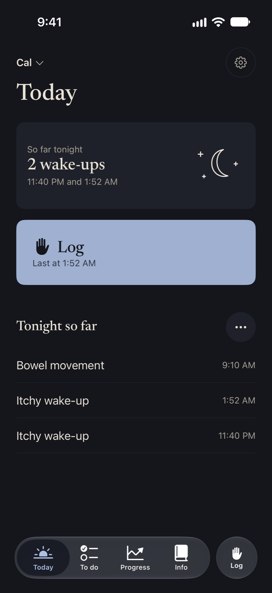

Log a rough night in one tap.
Cali Care keeps your child’s care plan and tracking in one calm place. Most days you tap Log right on your Lock Screen, without opening the app.
Free on iPhone while in beta. No account needed.Log from wherever your hand already is.
You’re holding a child, a tube of cream, or a phone in the dark. Every log is one tap, saved on your phone first, and it works offline.

Made for 2 AM.
At night the app dims to warm dark tones and the buttons get bigger, so you can log one-handed with a child in your arm. No bright white screen in a dark room.
One calm sentence about last night.
Open the app and there’s one question: how was their skin today? One tap answers it. Below it, a short note about last night and today’s log.


What do I do right now?
Bring in the care plan your provider gave you. Cali Care turns it into a short list for the morning, the afternoon, and bedtime, in plain words. Your provider’s exact words are one tap away.
Want a nudge? Turn on a reminder for each list and tap All done right from the notification.
Your plan, organized. Nothing else.
Your plan, not ours.
Whatever plan your doctor or practitioner gave you, conventional or natural, Cali Care helps you follow it. It never recommends treatments.
No streaks. No guilt.
Missed a day? It means nothing. Come back whenever you can.
Quiet and private.
No ads. No account needed to start. Your logs are saved on your phone.
Try it free in the beta.
Free while in beta. Works offline. No account needed.
Join the beta